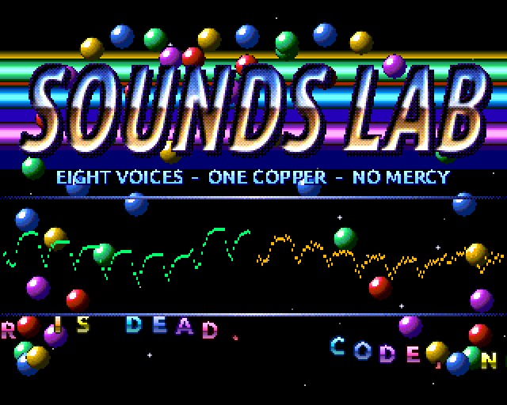

Next1MB13 November 2026
Eight Voices, One Copper
Eight sampled voices on the ZX Spectrum Next, played by the Copper one byte a scan line, with the DMA on two more DACs. An 80-bar song of our own and a 90s-style demo around it.
This page is for a Next owner who knows a bit of Z80. It says how the sound gets out with no CPU time spent on it, how the mixer fills it twice a frame, and how the demo shares the same Copper list. Every number here comes from the source or from a run in an emulator.
the song once through, recorded from the emulated Next, 2 min 36 s

How it works
The Copper writes the DACs
The Next's Copper is a little co-processor that waits for a scan line and writes Next registers. Two of those registers are DACs: $2C is DAC B, on the left, and $2E is DAC C, on the right. So a Copper list of a WAIT and two MOVEs for every line plays a stereo sample a line, and the CPU never touches the output.
A 50 Hz frame has 311 lines, so that is 933 of the Copper's 1,024 instructions. The demo adds one more MOVE on 89 of the lines (below), and a final WAIT for line 511, which never comes, ends the list: 1,023 in all. The list starts again from the top at every frame.
The DMA, and the FPGA adds them up
The Next has four 8-bit DACs: A and B on the left, C and D on the right. The FPGA adds each pair, A + B and C + D, into 9 bits before the AY chips go on top. So two streams written to different DACs on one side mix in hardware, with no clipping and no CPU.
That gives a third bus for free. The zxnDMA plays a centre bus to port $DF, which writes DACs A and D together, in burst mode, so the CPU keeps running between bytes. Each of the three buses has its own full 8 bits.
A frame is 311 lines, not 312
At 50 Hz with the Next's 128K timing, a frame is 567,264 T at 28 MHz: 311 lines of 1,824 T. It is easy to assume 312. A Copper list that does so waits for a line that never comes, and loses that line's sample every frame. It showed up as the stream sliding one place against the model (below). The engine counts the lines at start-up rather than assume, by following nextreg $1E/$1F to their highest value.
311 lines, 49.36 times a second, is 15,351 samples a second for each of the three buses.
Prescaler 57 is one line, exactly
The DMA's rate is 875 kHz divided by its prescaler, and 875 kHz is the 28 MHz clock divided by 32. So prescaler 57 sends a byte every 57 × 32 = 1,824 T: exactly one scan line. The centre bus stays in step with the Copper's buses for ever, and every bus plays at the same 15,351 Hz.
Two interrupts, two halves
Two line interrupts a frame, at lines 0 and 156, split the frame into halves of 156 and 155 lines. Each one restarts the DMA on the centre half that is starting, then mixes the half that has just played and writes it into the Copper list. So the half being filled is never the half being played. The song ticks once a frame, at line 0.
Writing the list is unrolled: per line it sends six bytes with out (c) through nextreg $60: the WAIT, then each MOVE's register and value. Nextreg $61/$62 point it at the right half without restarting the Copper.
Eight voices in Z80N
Each voice has a bus (centre, left or right), a volume from 1 to 31 and a pitch step in 8.8 fixed point, below 2.0. Samples are signed 8-bit at the line rate. A mix starts by clearing the three buses to $80, silence, two bytes at a push. Then each voice adds into its bus through its volume's table: 32 tables of 256 bytes, so scaling a sample is one ld a, (bc).
- At its own pitch (a step of exactly 1.0) a voice reads its sample with
pop, two bytes at a time, with SP pointed into the sample: 34 T a sample. The drums, the stabs at every pitch the song uses, the pads and the shouts all play this way. - Below its own pitch it keeps the position's fraction in A', adds the step's fraction each sample, and moves on a byte when that carries: 64 T a sample. Above it, a byte more each time: 70 T.
- The inner loops are unrolled for a whole half, and entered part-way for the number of lines.
The engine's code lives in pages 60-61, which the interrupt maps into slots 6-7 while it runs and then puts back. A voice's sample page and the next go into slots 0-1 (a half can cross a page), and the volume tables into slot 3. Bank 2 holds only the entry points and what the demo reads. The sound takes 26% of the CPU on average, and 38.5% at the busiest bar.
The song
The song is 80 bars at 123.4 BPM, 2 min 36 s, in C minor, up a tone to D minor at bar 56 and back for the end. Its sounds are synthesised by our own script: kick, snare, clap, hats, a bass, minor stabs, a lead, and looped string pads with loop lengths chosen to keep them in tune. The shouts were spoken by the Kokoro speech model, then trimmed, compressed and roughened.
It fits in one 8K page (6.3K): a table of 24 samples (start, end and loop, 3 bytes each), an order list with a pattern for each of 5 tracks in every bar, the patterns' addresses, then 121 patterns, one bar each. A pattern is a string of bytes:
$00: nothing more this bar.$01-$7F: wait that many frames.$80+voice: a note, then its sample, step, volume and bus.$88+voice: a new volume, 0 to stop (fades and swells).$90+voice: the voice's last note again.
A bar is 96 frames. The song's frame counter tells the demo exactly where in the music it is.
The demo shares the Copper list
On 89 lines, Layer 2 rows 32 to 120, each line in the list gets one more MOVE, of a register and a value the demo chooses. Behind the logo it is nextreg $4A, the fallback colour, which shows through wherever Layer 2 is transparent: that paints the sky and the five copper bars. On the plasma it is $16, Layer 2's X scroll, which bends the top third into a wobble. The music and the picture come from the same list, so they move in exact step.
The oscilloscope is drawn from the very buffers being played: 156 dots a side, what each ear hears.
Pictures that never move
The demo keeps three full 320×256 screens in memory and never redraws them: the logo, the plasma and the tunnel. Nextreg $12 picks which one Layer 2 shows. A switch takes effect at the next pixel, so each cut happens under a white flash. The plasma and the tunnel are pictures of palette numbers, and only their palettes move: the plasma turns a loop of 256 colours, and the tunnel steps through 64 palettes, 8 turns by 8 depths of an 8×8 texture.
Every frame all 256 colours go through one of 17 brightness tables, so fades, beat flashes and cut flashes are one number. With 32 stars, 48 bobs and 21 scroller letters as sprites on top, every part runs at the full frame rate: not one frame dropped over the whole song in JNEXT.
How it was checked
The script that makes the song also plays it through a Python model of the song player and the mixer, the same volume tables, steps and half-frame boundaries, and refuses a mix that would overflow a bus. JNEXT can log every DAC write with its T-state. Over the whole song and into its loop, with the demo running, every byte the Next wrote to the four DACs matched the model: 10,283,268 bytes, none different. The Copper's writes came 1,799 to 1,849 T apart, JNEXT's usual jitter around one 1,824 T line.
Then it was run and listened to in CSpect 3.3.1, which needed one change: CSpect stops when the Copper runs memory that hasn't been written, so the list is now written with the Copper stopped, then started. It played as it should. It has not yet been run on a real Next.
Screens
As the emulator draws it
Taken in JNEXT at moments in the song. Click a picture to see it bigger.


Download
Load it yourself
For any ZX Spectrum Next with 1MB. The music starts as soon as it loads, and loops until you reset.
- On a Next: copy
sounds-lab.nexto the SD card, find it in the Browser and press ENTER. Not yet tried on a real Next: if you do, we would like to hear. - In CSpect (with the Next's ROMs in its folder, as its readme says):
CSpect.exe -zxnext -s28 -w3 sounds-lab.nex. - Turn the sound up. It is on the quiet side.
- Made and checked at 50 Hz. The song ticks once a frame, so at 60 Hz it would play faster.